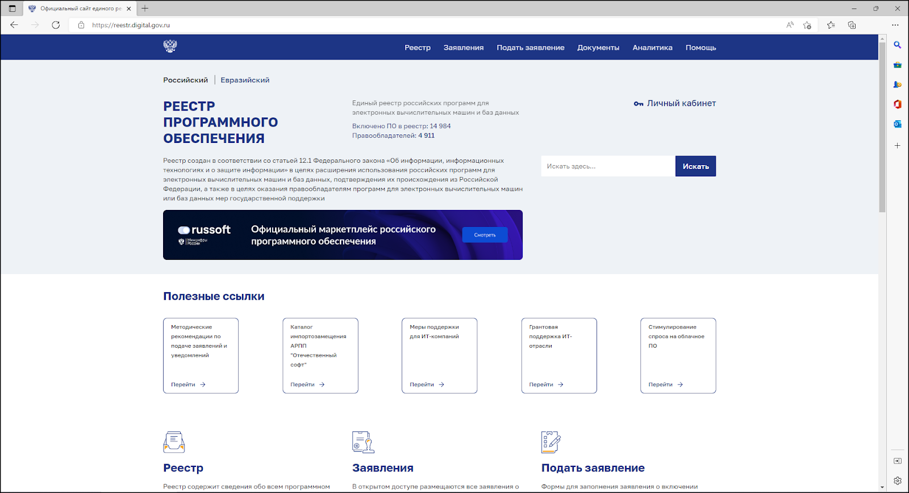

Российский софт: почему стоит перейти и какое ПО выбрать
В статье мы расскажем о плюсах российского софта и расскажем о 6 программах-аналогах для офиса и частного пользователя, которые могут стать полезными.
В 2022 году многие зарубежные разработчики программного обеспечения ограничили российским пользователям доступ к своей продукции. Вместе с тем, даже если запреты не вводились, купить иностранное ПО все равно сложно. Сильнее всего проблема затронула сегменты аудио-, видео- и графических редакторов, а также корпоративного софта.
Заменой недоступным приложениям должен стать российский софт. Отечественные ИТ-компании мгновенно отреагировали на ситуацию. Уже за первое полугодие 2022 года рынок вырос на 60%. Одни аналоги иностранного ПО еще предстоит внедрить, а другие уже давно существуют и успешно используются. Разберемся, какой отечественный софт сможет заменить ушедших конкурентов.
Что такое российский софт
Понятие «российский софт» закреплено федеральным законом. Более того, создан Реестр программного обеспечения, в котором сейчас почти 15 000 позиций. Чтобы ПО попало в Реестр, нужно соблюсти ряд требований. Они касаются информационной безопасности, локализации разработки и организации бизнеса компании-разработчика.

Разновидности и классификации российского софта
Официальный статус нужен для того, чтобы приложение могли использовать различные государственные структуры. Так они получают гарантии: при любых внешних условиях софт продолжит работать и не будет содержать вредоносный код (например, вирусы или шпионское ПО).
Сертификация добровольная. Если разработчикам не интересен государственный сектор, то они могут ее не проходить. Поэтому того или иного приложения может не быть в Реестре. И это вовсе не означает, что программа плохая.
Помимо официального статуса и функционального назначения, российское ПО различается по модели распространения и типу лицензии.
Типы распространения и типы лицензии российского софта
Все программное обеспечение можно разделить на три большие группы:
Бесплатное. Вы можете свободно скачивать, а потом использовать его, сколько захотите. В этом случае платить не приходится.
Условно-бесплатное. Программу можно свободно скачивать и использовать какое-то время. По истечении пробного периода приложение перестает работать. Чтобы продолжить его использовать, придется купить лицензию.
Платное. Такой софт не получится использовать без предварительной покупки. Способы распространения при этом могут быть разными: цифровые и электронные ключи, диски, флеш-накопители, персональные ссылки на облачные хранилища.
Типов лицензии еще больше. Различия касаются возможности изучать и модифицировать исходный код, а также распространять измененные программы от своего имени.
Спрос на российский софт
Долгое время отечественное ПО существовало и развивалось в условиях свободного рынка. Зачастую конкуренция оказывалась неравной. У иностранных компаний были огромные бюджеты, доступ к медиаресурсам, развитые связи с другими производителями и десятилетиями формируемая клиентская база. Даже при наличии революционных разработок у новичков не было никаких шансов.
В этой связи 2022 год дал российским разработчикам уникальную возможность. Введенные ограничения не ликвидировали потребностей локального рынка. Наоборот, лишенные доступа к иностранному софту пользователи стали искать отечественные аналоги.
Образовавшийся вакуум должен быть заполнен в кратчайшие сроки, иначе последствия для страны окажутся катастрофическими. В Правительстве это понимают. Поэтому предложен ряд мер, благодаря которым переход на российское ПО осуществится быстрее и окажется менее болезненным для компаний и обычных людей.
.png)
Исследование компании «Киберпротект» и Аналитического центра НАФИ.
Преимущества российского софта
У российского софта есть ряд неоспоримых преимуществ. Пользователи изначально получают интерфейс, справочные материалы и техническую поддержку на русском языке. Разработчики знают местную специфику, понимают проблемы и потребности потребителей. Большое число компаний готовы создавать индивидуальные решения для предприятий. Таким образом, у пользователей есть все основания ждать качественных и интересных продуктов.
Список рекомендуемого русского софта
Русский софт — вовсе не нечто абстрактное, что появится когда-нибудь в будущем. Есть большой список приложений, которые можно использовать уже сейчас. Вот лишь некоторые из них.
RussPO.ru